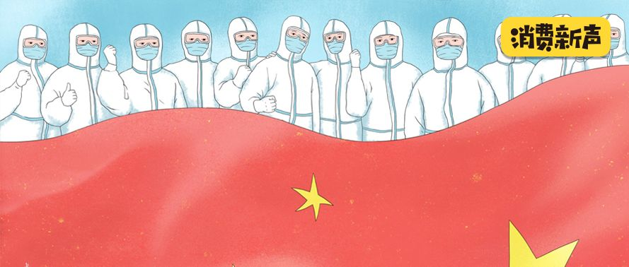
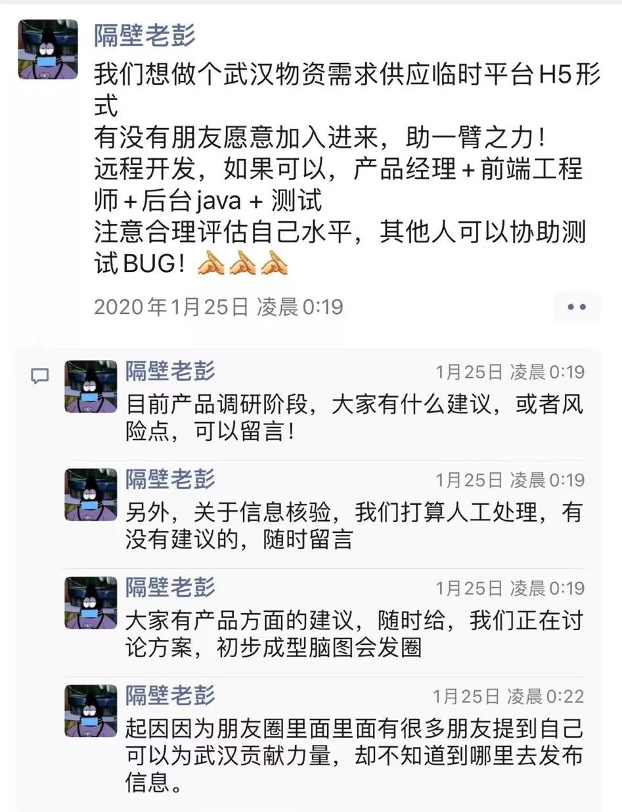
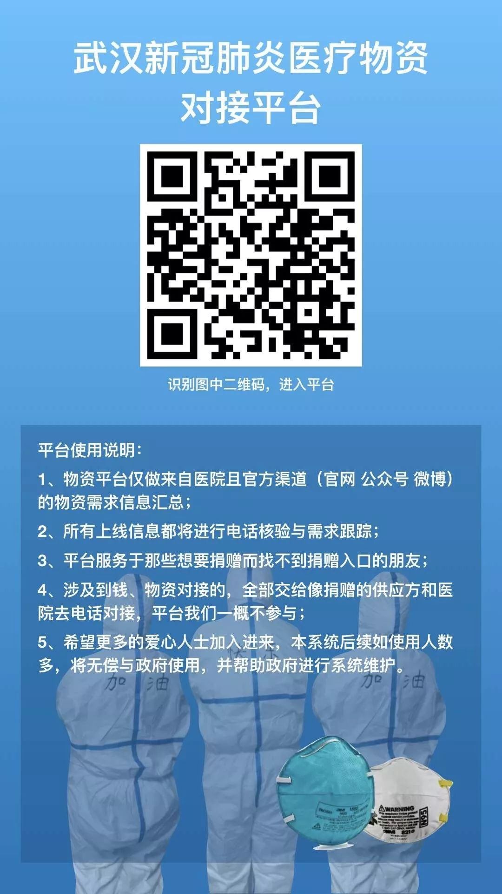
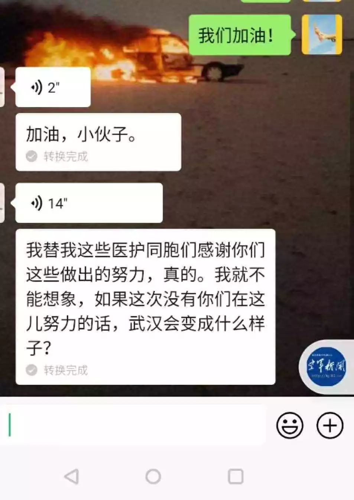

三名一线志愿者口述：红会、校友会、物资信息平台
原文链接 备份链接 “追踪一个人捐赠的物资是真的是没有时间去做的，因为每天捐赠的人太多了” \ 思思，武汉红十字会临时志愿者，话务组 \ 中国红十字会截至 1 月 25 日，累计接受爱心捐赠达 3.4 亿元，接受捐 …

关注并星标消费新声
不错过泛消费任何最新动态

从这个物资对接平台的建立、运作中，我们看到互助的力量。
作者 | 赵烨楠
编辑 | 罗立璇
1月24日，中国春节的大年三十、武汉“封城”的第二天。
在大量患者涌向医院的情况下，一切物资都在告急。在这一天，包括武汉在内的多个湖北城市的医院，不顾可能存在的“组织”风险，都开始分散式地向民间大声疾呼：他们需要护目镜、防护服、医用口罩……等一切能够保证他们还在前线奋战的物资。
面对前线的求援，民间力量正在凝聚，来自天南地北的志愿者们在网络上联系起来，快速形成志愿组织，他们的目标都指向一致：无论以什么形式，一定要帮助到医院。
其中有一批程序员，选择使用自己掌握的技术和能力，帮助自己生活的这个城市。阿凯、老彭、阿伟平时在武汉光谷软件园工作。面对不断涌现的医院需求和找不到对接的物资，他们决定，建立一个医用物资信息的对接平台，来改善钱和物的流通方式。
到现在，已经有十几位朋友一同加入进来，组织着这个平台的运转。而参与其中的志愿者、捐助方还要更多。每个人发挥着自己的作用，他们没有见过彼此，但互相信任。他们在网络上一起协作，完成着这个物资对接平台的建设与运营。
这是一场正在发生的、且发生在这个时代的民间援助故事。

一群人，关心一件事
西安人白灏没有心情观看春晚，一直在手机上刷着武汉疫情的相关消息。
这是新型冠状病毒肺炎由钟南山在央视上确认“人传人”消息的第四天。这天晚上，他看到朋友圈有人发了“为武汉加油”的志愿者群，他马上点二维码加了进去。
当天，武汉协和医院、湖北省人民医院、武汉大学中南医院等等数十家医院都发出公告，恳请社会各界伸出援手。这些信息过于庞杂，想要捐助的人也很多。许多经过二手转发的医院信息、捐助信息难以被核实和完成顺畅的对接。
那天晚上，白灏加入的这个群，讨论声一直没有停息。很多人在群里转发了这些医院的捐赠公告，天南地北的志愿者，无论在不在武汉，都在群里讨论着，希望出一份力。
武汉人老彭的想法更加迫切。老彭是一名软件工程师，在光谷软件园的一家科技公司工作。
“光谷”的正式名称是东湖新技术开发区，在2001年被原国家计委、科技部批准为国家光电子产业基地，从而获得别称：“中国光谷”。在今天，它已经成为武汉的互联网中心，坐落着包括微软、华为、小米、科大讯飞，和小红书等几百家海内外高新企业的分部及武汉本土创新企业。
自23号武汉“封城”以后，老彭和同事都在家里自我隔离，哪儿也去不了。“封城”第二天的物资告急，他们都看在眼里。他和同事在公司群里讨论着，觉得可以利用自己的职业帮助他们，让物资对接变得更加高效。
老彭在自己公司的群里@了设计、@了研发，问这件事是否可行，他们的回答是：当然可以。25号凌晨刚过，他发了一条朋友圈，希望更多的朋友能参与进来，一起帮忙。

看到这条朋友圈的人把他和同事拉到了白灏所在的志愿者群。老彭对大家说，他们可以帮忙搭建一个H5形式的信息平台，方便医院与捐赠方对接。群里的朋友们反应很热烈，希望自己也能帮一把。
白瀚就是在这时主动加了老彭，想尽自己能力帮一点忙。一晚上的时间内，职责正在快速分配中，白瀚马上成为了这个信息平台团队的媒体对接人。
那天晚上，加老彭和他的同事的人很多很多——“我在北京做产品经理，武汉人”“我能做java，15年从武汉毕业”“我是做UI设计的，想加入”。
一时间，远在不同地方的朋友通过这件事聚集到了一起。他们都是网友，从来没见过面。白瀚说，“我们对彼此都不是很了解，但在这个事情上很快凝聚了起来”。
到25号凌晨两点多的时候，基本的人员架构已经完成。老彭、阿凯、阿伟，同公司的三位同事成为搭建这个信息平台的主要负责人。阿凯负责技术，老彭负责运营，阿伟负责产品设计。老彭在朋友圈说，“我们预计会在今晚先把H5跑起来，过程中还会有大量需要做信息录入的工作量，到时候还要得到大家的帮助。”末尾他说了两遍：“非常感谢！”
他们几个人一晚上没睡觉。到25号上午10点，短短7个多小时的时间内，物资对接平台的雏形已经搭建起来了。点进这个版本的链接中，已经能看到每家接受捐赠医院的详细信息，包括医院地址、联系电话、物资需求清单、防护物资标准与相关图片，还可以一键拨打医院留下的电话号码。

每天都在更新中
快速搭建起来的平台为医院与捐助方的快速对接提供了便利，并且每天都在进行信息的核实、更新和平台架构的迭代中。这个平台的身后，是更多拥有相同目标的朋友，自愿承担起了不同的职责，为平台的运营努力着，也在不同群组中扩展着平台功能意义的外延。
小型的组织架构很快成型。他们成立了统筹组进行不同职责间的分工与安排。产品组负责前端与后台的搭建与测试，平台功能的迭代；运营组负责医院数据的收集；客服组负责医院信息的核查，一个一个向医院打电话进行核实；还将医院方的负责人拉进一个群，进行需求的对接和更新。
越来越多的朋友加入了进来，这些“志愿者”不只以个人形式加入，还有公司。
他们将医院信息的核实工作利用石墨文档整合到一起，方便随时添加和修改。石墨文档的办公室就在老彭公司隔壁，一年前刚从字节跳动那里获得了近亿元人民币的融资。那边的热心同事很快联系到阿凯，为他们提供技术支持，并且免费向他们开放了VIP权限。
为了信息准确度，在医院信息核实的优先级上，老彭他们以医院官方公众号、微博、网站发布的信息为先，其次是具有公信力的媒体发布的消息，接下来是博主、自媒体等转发的医院信息。

26号凌晨，平台2.0版本上线了。老彭在朋友圈发了这样一张平台信息海报。
更新后，平台向公众开放了平台联系方式，更多朋友可以将自己了解的医院信息、捐助信息发送给平台，核实后再展示。采访当天，平台上的医院信息分为“信息已核实”和少量的“信息未核实”状态，这些医院信息核实后会再进行修改。
“我们不想怀疑任何一个医院提出的需求”，老彭说，为了保证没有一家需要帮助的医院被遗漏，少数没有来得及核实的医院信息会先被放上平台，之后再进行逐步核实。
同时，2.0版本还上线了车辆资源信息。包括政府车辆、民间志愿者车辆与物流公司志愿车辆。提供了联系方式、配送范围、配送时间等信息，虽然有些信息还并不完善。
每个志愿者不计回报地忙上忙下，“各司其职”。在他们的努力下，平台每天都在更新着，从前端信息到后台技术。
到后来的3.0、4.0版本，分别通过医院的浏览量、联系次数对医院展示位置做了优先级排序；在平台系统和信息的安全性上做了升级，后台进行了加密，每条数据信息的来源也可追溯。医院证明公函、医疗机构执业许可证、捐赠公告也都一并添加，从繁重的人工审核逐渐变成了自动化审核。
今天，平台的4.0版本正式上线。截止今天，平台共审核上线了801家医院信息，66条车辆资源信息。与此同时，他们的组织还在不断壮大，陆续融合了很多其他的志愿者组织。他们一起将这次临时聚集起来的公益组织命名为“E起支援”，希望能代表大家互联、互助的精神。

▲“E起支援”融合的其他公益组织
白瀚说，许多医院已经通过平台收到了急需的物资捐赠，这些捐赠方包括许多海内外的华人和企业。而物资对接还正在持续进行中。

疲惫、质疑与感动
这几天，白瀚、老彭，这些志愿者中的很多人都没怎么睡好。
老彭从参与进来那天起，每天只睡两三个小时。老彭的家人、朋友都有些心疼他。尤其是家人，“他们觉得我太累了”。可老彭说，投入进来后，身体反倒没有什么感知。
添加他微信的人每天都很多，直到“数字已经不提示了，变成了小红点”。只要有需求的，他每条认真回复。老彭把这项公益当成自己的工作在做。
白瀚也一样，昨晚到现在，他只“半梦半醒睡了两个小时”。白瀚是一名话剧演员，在这几天中，他担起了媒体对接、文案写作等各种各样的活儿。今天凌晨，设计在出图，他怕文案跟不上，半夜睡睡醒醒地坚持把平台的文案写了出来。
26号，因为网站访问量太大。网址被封了。腾讯看到他们做的事之后，也找到他们，为他们提供了网站域名支持。
做一件好事并不容易。即使他们中的每一个人都不参与任何资金、物资运作，仅参与信息平台本身的建设，质疑声还是跟了过来。
有人把他们的海报拿过去改了之后作假，当作自己筹资的宣传物料。还有人加到他们核心成员的微信，拉到一个群里，和他讨论“之后的路该怎么走”，想拉他们一起商业化运营。他们核心成员只好在群里强调，“我们不碰钱，不碰物”。对方马上回复，“那我们走的不是一条路”。
这让他们觉得无可奈何，白瀚说，“也没有办法，什么样的人都有”。同时，他们更加担心自己被误会，不想让一件好事变味儿。
不过，更多的人和事让他们感动。这几天，陆续收到捐赠物资的医院人员在微信上向他们表达感谢。一位医生向其中一位志愿者发语音说“我替我这些医护同胞们感谢你们做出的努力。”这让这些志愿者们觉得很感动。

在采访中，白瀚跟我提到了三次“凝聚”这个词，这也是他这几天的最大感触。“我们所有人，用一个词来概括，就是凝聚”。
而老彭觉得，在这个事情一开始，他们就想到，这件事很可能没什么结果，或者会突然中断。“如果疫情结束，我们也结束了，这也是我们的初衷。反正就先做嘛，不问结果，那些都不要紧。”
相关阅读：
end
**©消费新声原创内容 转载请联系授权
**
【爆料或寻求报道】加微信号：Suburb001
【商务合作】加微信号：sansheng_kefu


原文链接 备份链接 “追踪一个人捐赠的物资是真的是没有时间去做的，因为每天捐赠的人太多了” \ 思思，武汉红十字会临时志愿者，话务组 \ 中国红十字会截至 1 月 25 日，累计接受爱心捐赠达 3.4 亿元，接受捐 …
原文链接 备份链接 他觉得自己像一个巨大的电插座，身上插满了孔，求助信息和资源提供信息被一起插到他身上，他再来牵线对接。 文 | 谢婵 李叙瑾 编辑 | 小豆 22岁的梅浩宇窝在出租屋里，吃光了13包泡面和3大袋零食，每天睁开眼睛，他就开 …
原文链接 备份链接 作者 | 朱凯麟 张依依 编辑 | 韩方航 1 月 23 日武汉仓促封城以来，各大社交平台就被蜂拥而至的求助信息淹没，医院不断对外请求口罩、防护服、护目镜。民间组织快速涌现出来，他们大多临时拼凑，利用石墨文档、微信群等 …
原文链接 备份链接 武汉“封城”后公共交通停运，自1月24日开始，路上开始出现民间自助形式的车队。私家车主轮班，车队昼夜不停，每天接送医护人员、运输医疗物资，每送一趟要用75%酒精浓度的消毒液喷洒一遍车辆，油钱、防护口罩、消毒液都自掏腰 …
原文链接 备份链接 武汉封城后的逆行者 空荡荡的武汉城区。自1月23日10时起，武汉全市关闭公共交通。本刊记者/黄孝光 摄（下同） 1月23日，武汉封城，此时，护士梅伊和胡云云成了逆行者。 她们是大学同学，毕业后分别去了武汉华润武钢总医院 …